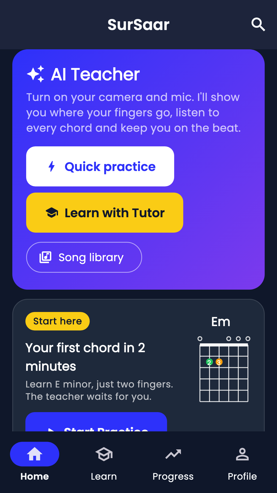
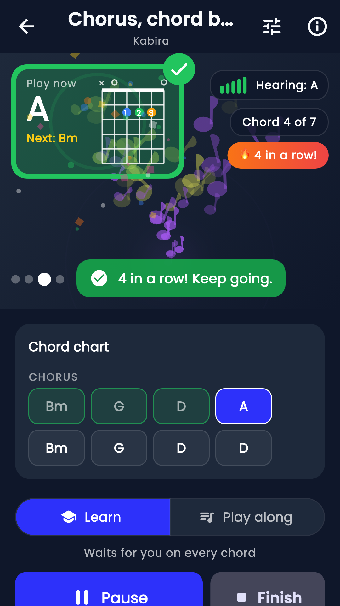
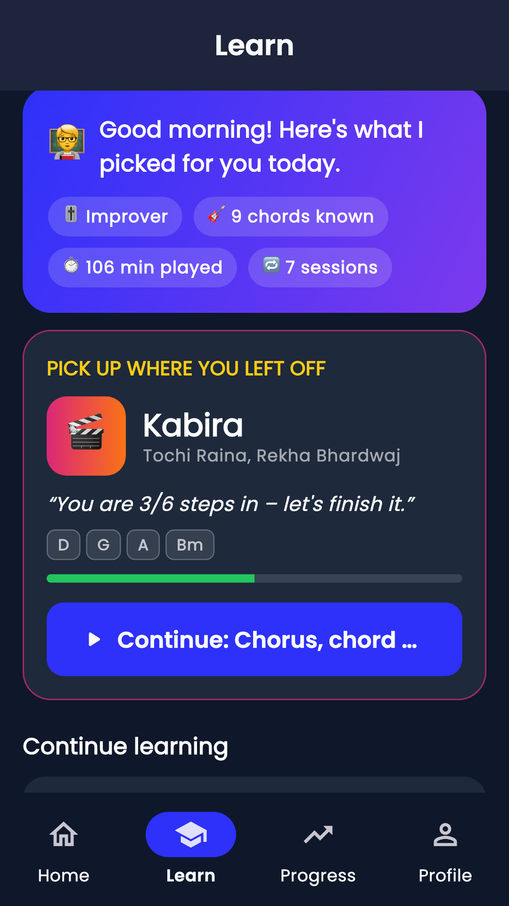
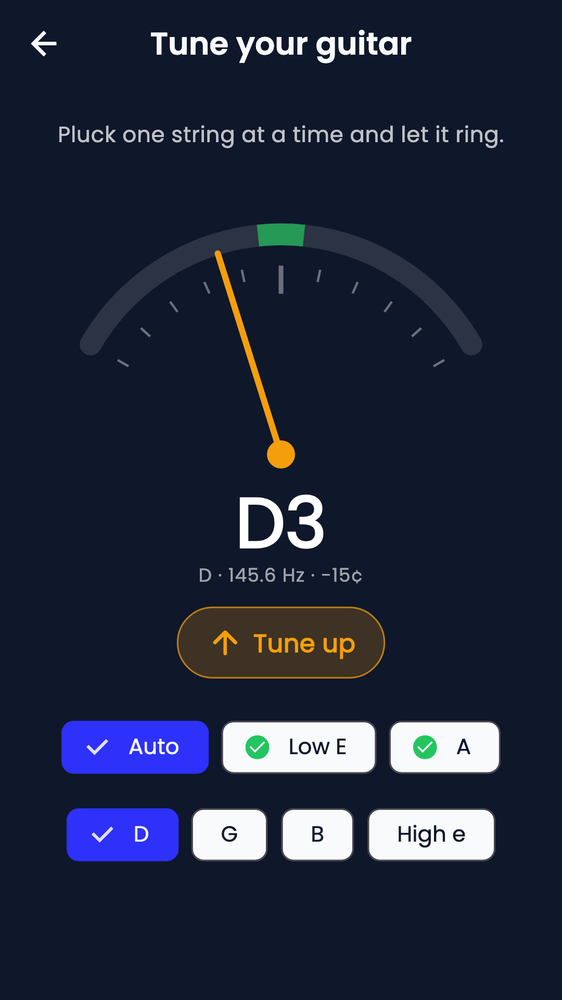
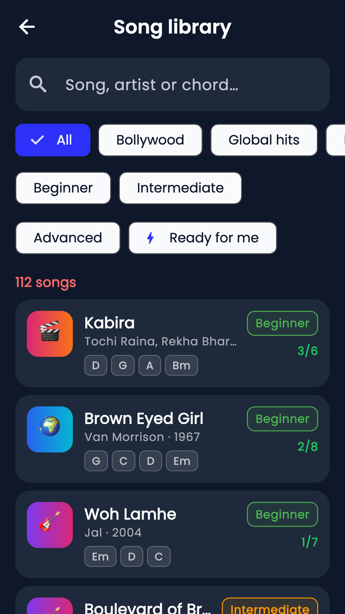
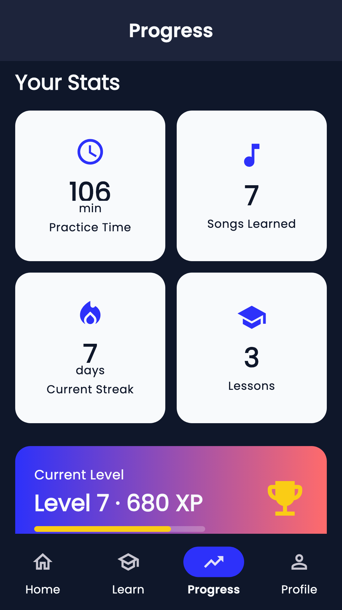

Flutter · Dart · on-device audio
SurSaar सुरसार
A guitar teacher that listens to you play, with no server to send the audio to.
Flutter · Dart · on-device audio
A guitar teacher that listens to you play, with no server to send the audio to.
Learning an instrument needs someone to tell you the chord was wrong. That feedback usually means streaming your microphone to somebody’s server.
Here the pitch detection and chord tracking run on the handset, so it works on a train with no signal and the audio never leaves the room.
A tuner, a metronome, chord and strumming practice with live feedback, a song library with capo charts, and progress kept on the device.






Tell me what you have in mind. I answer the same day.
Send your requirements